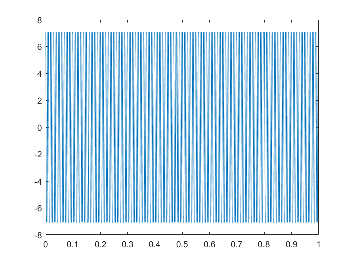
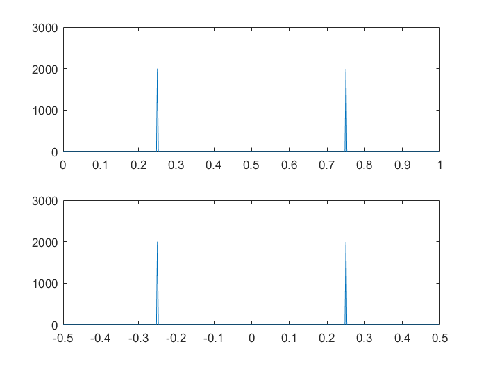
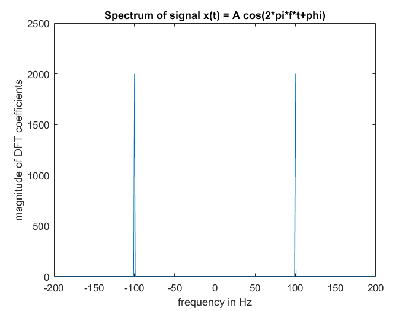
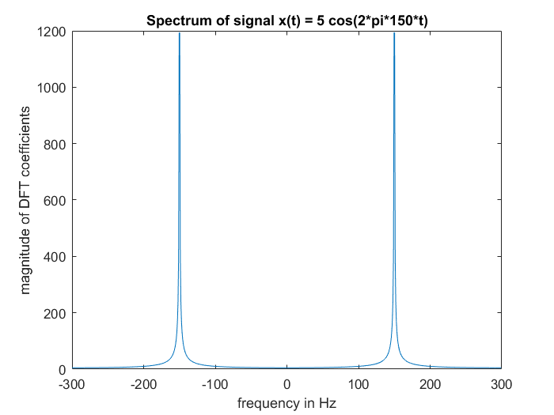
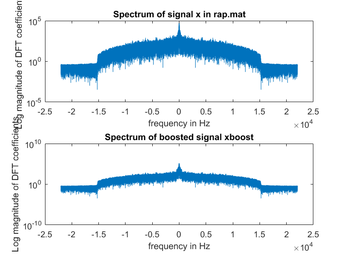

<!DOCTYPE html
  PUBLIC "-//W3C//DTD HTML 4.01 Transitional//EN">
<html><head>
      <meta http-equiv="Content-Type" content="text/html; charset=utf-8">
   <!--
This HTML was auto-generated from MATLAB code.
To make changes, update the MATLAB code and republish this document.
      --><title>Matt Bachmeier</title><meta name="generator" content="MATLAB 9.0"><link rel="schema.DC" href="http://purl.org/dc/elements/1.1/"><meta name="DC.date" content="2017-03-01"><meta name="DC.source" content="lab5Part1.m"><style type="text/css">
html,body,div,span,applet,object,iframe,h1,h2,h3,h4,h5,h6,p,blockquote,pre,a,abbr,acronym,address,big,cite,code,del,dfn,em,font,img,ins,kbd,q,s,samp,small,strike,strong,sub,sup,tt,var,b,u,i,center,dl,dt,dd,ol,ul,li,fieldset,form,label,legend,table,caption,tbody,tfoot,thead,tr,th,td{margin:0;padding:0;border:0;outline:0;font-size:100%;vertical-align:baseline;background:transparent}body{line-height:1}ol,ul{list-style:none}blockquote,q{quotes:none}blockquote:before,blockquote:after,q:before,q:after{content:'';content:none}:focus{outine:0}ins{text-decoration:none}del{text-decoration:line-through}table{border-collapse:collapse;border-spacing:0}

html { min-height:100%; margin-bottom:1px; }
html body { height:100%; margin:0px; font-family:Arial, Helvetica, sans-serif; font-size:10px; color:#000; line-height:140%; background:#fff none; overflow-y:scroll; }
html body td { vertical-align:top; text-align:left; }

h1 { padding:0px; margin:0px 0px 25px; font-family:Arial, Helvetica, sans-serif; font-size:1.5em; color:#d55000; line-height:100%; font-weight:normal; }
h2 { padding:0px; margin:0px 0px 8px; font-family:Arial, Helvetica, sans-serif; font-size:1.2em; color:#000; font-weight:bold; line-height:140%; border-bottom:1px solid #d6d4d4; display:block; }
h3 { padding:0px; margin:0px 0px 5px; font-family:Arial, Helvetica, sans-serif; font-size:1.1em; color:#000; font-weight:bold; line-height:140%; }

a { color:#005fce; text-decoration:none; }
a:hover { color:#005fce; text-decoration:underline; }
a:visited { color:#004aa0; text-decoration:none; }

p { padding:0px; margin:0px 0px 20px; }
img { padding:0px; margin:0px 0px 20px; border:none; }
p img, pre img, tt img, li img, h1 img, h2 img { margin-bottom:0px; } 

ul { padding:0px; margin:0px 0px 20px 23px; list-style:square; }
ul li { padding:0px; margin:0px 0px 7px 0px; }
ul li ul { padding:5px 0px 0px; margin:0px 0px 7px 23px; }
ul li ol li { list-style:decimal; }
ol { padding:0px; margin:0px 0px 20px 0px; list-style:decimal; }
ol li { padding:0px; margin:0px 0px 7px 23px; list-style-type:decimal; }
ol li ol { padding:5px 0px 0px; margin:0px 0px 7px 0px; }
ol li ol li { list-style-type:lower-alpha; }
ol li ul { padding-top:7px; }
ol li ul li { list-style:square; }

.content { font-size:1.2em; line-height:140%; padding: 20px; }

pre, code { font-size:12px; }
tt { font-size: 1.2em; }
pre { margin:0px 0px 20px; }
pre.codeinput { padding:10px; border:1px solid #d3d3d3; background:#f7f7f7; }
pre.codeoutput { padding:10px 11px; margin:0px 0px 20px; color:#4c4c4c; }
pre.error { color:red; }

@media print { pre.codeinput, pre.codeoutput { word-wrap:break-word; width:100%; } }

span.keyword { color:#0000FF }
span.comment { color:#228B22 }
span.string { color:#A020F0 }
span.untermstring { color:#B20000 }
span.syscmd { color:#B28C00 }

.footer { width:auto; padding:10px 0px; margin:25px 0px 0px; border-top:1px dotted #878787; font-size:0.8em; line-height:140%; font-style:italic; color:#878787; text-align:left; float:none; }
.footer p { margin:0px; }
.footer a { color:#878787; }
.footer a:hover { color:#878787; text-decoration:underline; }
.footer a:visited { color:#878787; }

table th { padding:7px 5px; text-align:left; vertical-align:middle; border: 1px solid #d6d4d4; font-weight:bold; }
table td { padding:7px 5px; text-align:left; vertical-align:top; border:1px solid #d6d4d4; }


  </style></head><body><div class="content"><h1>Matt Bachmeier</h1><!--introduction--><p>Lab 05 Part 1 ECE 203 3/5/2017</p><!--/introduction--><h2>Contents</h2><div><ul><li><a href="#1">Section 3.1</a></li><li><a href="#2">Section 3.2</a></li><li><a href="#3">Section 4.1</a></li><li><a href="#4">Section 4.2 Digital Music Equalizer</a></li></ul></div><h2>Section 3.1<a name="1"></a></h2><p>Consider the continuous time sinusoid x(t)=A*cos(2*pi*f0*t+phi) Sampling x(t) at a rate of fs (=1/Ts) results in a discrete time signal x[n]=A*cos(2*pi*f0*Ts*n+phi) If we sample the sinusoid over the time period 0 &lt;= t &lt;= T seconds, then we will acquire N = T*fs samples. The following Matlab script generates and plots a sampled signal:</p><pre class="codeinput">clear <span class="string">all</span>; close <span class="string">all</span>;
A = 10;

f0 = 100;
phi = pi/4;
fs = 400;
Ts = 1/fs;
T = 1;
N = T*fs;
tn = (0:N-1)/fs;
x = A*cos(2*pi*f0*Ts*(0:N-1)+phi);

figure(1)
plot(tn,x)
<span class="comment">% what is the frequency the sinusoid that was sampled?</span>
fprintf(<span class="string">'The frequency of the sinusoids that was sampled is %g Hz\n'</span>, f0)
<span class="comment">% Was it adequately sampled at or above the Nyquist rate?</span>
fprintf(<span class="string">'because %g &lt; fs/2 ( %g ), the sampling frequency is above Nyquist rate\n'</span>, <span class="keyword">...</span>
    f0, fs/2)
fprintf(<span class="string">'Number of samples acquired per cycle = %g\n'</span>, fs/f0)

<span class="comment">% The DFT of this signal an be coputed by simply implementing the</span>
<span class="comment">% mathematical formula X[k]=sum_n=0^N-1 x[n]*exp(-j*2*pi*k*n/N).</span>
<span class="comment">% Note that in Matlab, index starts at 1 rather than 0.</span>

type <span class="string">mydft.m</span>
<span class="comment">% Create another function my_idft that takes X and synthesizes according to</span>
<span class="comment">% x[n]=(1/N)*sum_(k=0)^(N-1) X[k]exp(j*2*pi*k/N*n), n = 0, 1, ..., N-1.</span>

type <span class="string">my_idft.m</span>

<span class="comment">% Compare the speed of your functions to the built-in Matlab functiosn</span>
<span class="comment">% using the script:</span>
tic;

myX = mydft(x);
mytime = toc;
tic;
matX = fft(x);

mattime = toc;
fprintf(<span class="string">'mytime = %g and mattime = %g\n'</span>,mytime, mattime)
<span class="comment">% How does mytime compare to mattime? Which one is faster?</span>
<span class="keyword">if</span> mytime &lt; mattime,
    fprintf(<span class="string">'mydft runs faster\n'</span>)
<span class="keyword">else</span>
    fprintf(<span class="string">'fft runs faster\n'</span>)
<span class="keyword">end</span>
</pre><pre class="codeoutput">The frequency of the sinusoids that was sampled is 100 Hz
because 100 &lt; fs/2 ( 200 ), the sampling frequency is above Nyquist rate
Number of samples acquired per cycle = 4

function X = mydft(x)
N=length(x);
for k=1:N
    X(k) = 0;
    for n = 1:N
        X(k) = X(k) + x(n)*exp(-j*2*pi*(k-1)/N*(n-1));
    end
end

function X = my_idft(x)
N = length(x);
for n = 1:N
    X(n) = 0;
    for k = 1:N
        X(n) = X(n) + x(k)*exp(j*2*pi*(k-1)/N*(n-1));
    end
    X(n) = (1/N)*X(n);
end
mytime = 0.122353 and mattime = 0.000314909
fft runs faster
</pre> <h2>Section 3.2<a name="2"></a></h2><pre class="codeinput"><span class="comment">% The following script show the Matlab command fftshift automatically wrap</span>
<span class="comment">% the DFT output from 1/2 to 1 to -1/2 to 0:</span>
figure(2);

X = fft(x);
fhata = (0:N-1)/N;
subplot(2,1,1);
plot(fhata,abs(X));
fhatb = (-N/2:N/2-1)/N;

subplot(2,1,2);
plot(fhatb,fftshift(abs(X)));

<span class="comment">% we can scale the frequency axis to convert from units of cycles/sample to</span>
<span class="comment">% cycles/second (Hz). This is done by scaling the frequency values from k/N</span>
<span class="comment">% with fs</span>
figure(3);
fHz = (-N/2:N/2-1)/N*fs;
plot(fHz,fftshift(abs(X)));
xlabel(<span class="string">'frequency in Hz'</span>);
ylabel(<span class="string">'magnitude of DFT coefficients'</span>);
title(<span class="string">'Spectrum of signal x(t) = A cos(2*pi*f*t+phi)'</span>);

<span class="comment">% Now generate samples of a sinusoidal signal with A= 5, f= 150Hz, phi= 0,</span>
<span class="comment">% and fs= 600 over a time period of T= 1:25 seconds. How many samples are</span>
<span class="comment">% generated? Plot the spectrum of the signal. Is it what you expected?</span>
A=5;
f=150; <span class="comment">%Hz</span>
phi = 0; <span class="comment">% phase</span>
fs=600; <span class="comment">% Hz</span>

Tx = 1/fs;
T = 1.25;
N = T*fs;
tn = (0:N-1)/fs;
x = A*cos(2*pi*f0*Ts*(0:N-1) + phi);

<span class="comment">% Plots the second sinusoidal signal</span>
X = fft(x);
fHz = (-N/2:N/2-1)/N*fs;
figure(4);
plot(fHz, fftshift(abs(X)));

xlabel(<span class="string">'frequency in Hz'</span>);
ylabel(<span class="string">'magnitude of DFT coefficients'</span>);
title(<span class="string">'Spectrum of signal x(t) = 5 cos(2*pi*150*t)'</span>);
</pre>   <h2>Section 4.1<a name="3"></a></h2><p>Spectrum Analysis and Leakage Mathematically explain why the spectrum of the 150Hz sinusoid in the warm-up did not consist of two perfect peaks (see Section 13-5.5 in the textbook). This effect is often called spectral leakage".</p><pre class="codeinput"><span class="comment">% There is nothing to do in section 4.1</span>
</pre><h2>Section 4.2 Digital Music Equalizer<a name="4"></a></h2><p>The DFT is the ideal tool for designing a digital music equalizer. We can boost (or suppress) various frequencies in a song using the DFT. The rap song rap.mat is in the folder "music clips" folder that you can download from the moodle site. The signal is 1048576 samples in length. The sampling rate is 44.1kHz. You can play the clip by executing the commands % load rap.mat followed by soundsc(x,fs) in Matlab.</p><pre class="codeinput">load <span class="string">rap.mat</span>; <span class="comment">% variable name: rap</span>
fs=44100; <span class="comment">% sampling frquency 44.1 KHz</span>

N = length(x); <span class="comment">% should be 1048576</span>

<span class="comment">% soundsc(x,fs);</span>

<span class="comment">% 4.2.a Given the length and the sampling rate, how many seconds of</span>
<span class="comment">% the song were recorded?</span>
<span class="comment">% Answer: 1048576/44100 = 23.7772 seconds recorded</span>

T = N/fs;

fprintf(<span class="string">'Total duration of this music clip rap.mat is %g sec.\n'</span>,T)

<span class="comment">% 4.2.b Use the Matlab command fft to compute the DFT of the signal and</span>
<span class="comment">% plot its spectrum.(plot the log of the magnitude of the DFT, using</span>
<span class="comment">% semilogy instead of plot, and scale the frequency axis to display Hz).</span>

X = fft(x);
fHz = (-N/2:N/2-1)/N*fs;

subplot(2,1,1)
semilogy(fHz,fftshift(abs(X)));

xlabel(<span class="string">'frequency in Hz'</span>);
ylabel(<span class="string">'Log magnitude of DFT coefficients'</span>);
title(<span class="string">'Spectrum of signal x in rap.mat'</span>);

<span class="comment">% Do you observe a distinct drop in energy above a certain frequency?</span>
<span class="comment">% What would you suggest is the effective bandwidth (i.e., the maximum</span>
<span class="comment">% frequency) of the signal? Was it oversampled?</span>
<span class="comment">%</span>
<span class="comment">% Answer: Yes, the spectrum drops above 15 KHz. That would also be the</span>
<span class="comment">% bandwidth of the signal. Since fs = 44.1 KHz &gt; 2*(15) KHz, this signal is</span>
<span class="comment">% sampled above the Nyquist rate (over-sampled).</span>

<span class="comment">% 4.2.c</span>
<span class="comment">% To "boost" the bass, amplify the low frequency components of the signal</span>
<span class="comment">% corresponding to frequencies at 500Hz and below by a factor of 3.</span>
<span class="comment">% Determine which DFT coefficients should be amplied given this specification.</span>
<span class="comment">% Note: you need to amplify both the positive and negative frequencies</span>
<span class="comment">% in order to preserve the symmetry of the DFT coefficients.</span>
<span class="comment">% After amplifying the low frequency DFT coecients, reconstruct a new</span>
<span class="comment">% signal using the ifft command. Listen to the boosted track and</span>
<span class="comment">% plot its spectrum to compare with the original spectrum plotted in b.</span>
<span class="comment">%</span>
<span class="comment">% first identify digital frequency k1/N corresponding to 500 Hz</span>
fcutoff=500; <span class="comment">% cutoff frequency for frequency boost</span>
Ampfactor=3; <span class="comment">% amplification factor</span>

Xboost = X;

<span class="keyword">for</span> k = 0:N-1;
    <span class="keyword">if</span> (k*fs/N) &lt;= fcutoff
        Xboost(k+1) = Xboost(k+1)*Ampfactor;
        Xboost(N-k) = Xboost(N-k)*Ampfactor;
    <span class="keyword">end</span>
<span class="keyword">end</span>

xboost = abs(ifft(Xboost));

<span class="comment">% soundsc(xboost,fs);</span>
subplot(2,1,2),
semilogy(fHz,fftshift(abs(Xboost)));
xlabel(<span class="string">'frequency in Hz'</span>);
ylabel(<span class="string">'Log magnitude of DFT coefficients'</span>);
title(<span class="string">'Spectrum of boosted signal xboost'</span>);


<span class="comment">% 4.2.d</span>

type <span class="string">MEGAbass.m</span>
</pre><pre class="codeoutput">Total duration of this music clip rap.mat is 23.7772 sec.

function xboost = MEGAbass(x,AmplificationFactor,BassCutoffFreq,fs)

xboost = x;
for k = 0:N-1;
    if (k*fs/N) &lt;= fcutoff
        xboost(k+1) = xboost(k+1)*Ampfactor;
        xboost(N-k) = xboost(N-k)*Ampfactor;
    end
end
</pre> <p class="footer"><br><a href="http://www.mathworks.com/products/matlab/">Published with MATLAB&reg; R2016a</a><br></p></div><!--
##### SOURCE BEGIN #####
%% Matt Bachmeier
% Lab 05 Part 1
% ECE 203
% 3/5/2017

%% Section 3.1
% Consider the continuous time sinusoid x(t)=A*cos(2*pi*f0*t+phi)
% Sampling x(t) at a rate of fs (=1/Ts) results in a discrete time signal
% x[n]=A*cos(2*pi*f0*Ts*n+phi)
% If we sample the sinusoid over the time period 0 <= t <= T seconds, 
% then we will acquire N = T*fs samples. The following Matlab script
% generates and plots a sampled signal:

clear all; close all;
A = 10;

f0 = 100;
phi = pi/4;
fs = 400;
Ts = 1/fs;
T = 1;
N = T*fs;
tn = (0:N-1)/fs;
x = A*cos(2*pi*f0*Ts*(0:N-1)+phi);

figure(1)
plot(tn,x)
% what is the frequency the sinusoid that was sampled? 
fprintf('The frequency of the sinusoids that was sampled is %g Hz\n', f0)
% Was it adequately sampled at or above the Nyquist rate? 
fprintf('because %g < fs/2 ( %g ), the sampling frequency is above Nyquist rate\n', ...
    f0, fs/2)
fprintf('Number of samples acquired per cycle = %g\n', fs/f0)

% The DFT of this signal an be coputed by simply implementing the
% mathematical formula X[k]=sum_n=0^N-1 x[n]*exp(-j*2*pi*k*n/N). 
% Note that in Matlab, index starts at 1 rather than 0. 

type mydft.m
% Create another function my_idft that takes X and synthesizes according to
% x[n]=(1/N)*sum_(k=0)^(N-1) X[k]exp(j*2*pi*k/N*n), n = 0, 1, ..., N-1.

type my_idft.m

% Compare the speed of your functions to the built-in Matlab functiosn
% using the script:
tic;

myX = mydft(x);
mytime = toc;
tic;
matX = fft(x);

mattime = toc;
fprintf('mytime = %g and mattime = %g\n',mytime, mattime)
% How does mytime compare to mattime? Which one is faster? 
if mytime < mattime, 
    fprintf('mydft runs faster\n')
else
    fprintf('fft runs faster\n')
end

%% Section 3.2

% The following script show the Matlab command fftshift automatically wrap
% the DFT output from 1/2 to 1 to -1/2 to 0:
figure(2);

X = fft(x);
fhata = (0:N-1)/N;
subplot(2,1,1);
plot(fhata,abs(X));
fhatb = (-N/2:N/2-1)/N;

subplot(2,1,2);
plot(fhatb,fftshift(abs(X)));

% we can scale the frequency axis to convert from units of cycles/sample to 
% cycles/second (Hz). This is done by scaling the frequency values from k/N
% with fs
figure(3);
fHz = (-N/2:N/2-1)/N*fs;
plot(fHz,fftshift(abs(X)));
xlabel('frequency in Hz');
ylabel('magnitude of DFT coefficients');
title('Spectrum of signal x(t) = A cos(2*pi*f*t+phi)');

% Now generate samples of a sinusoidal signal with A= 5, f= 150Hz, phi= 0, 
% and fs= 600 over a time period of T= 1:25 seconds. How many samples are 
% generated? Plot the spectrum of the signal. Is it what you expected?
A=5;
f=150; %Hz
phi = 0; % phase
fs=600; % Hz

Tx = 1/fs;
T = 1.25;
N = T*fs;
tn = (0:N-1)/fs;
x = A*cos(2*pi*f0*Ts*(0:N-1) + phi);

% Plots the second sinusoidal signal
X = fft(x);
fHz = (-N/2:N/2-1)/N*fs;
figure(4);
plot(fHz, fftshift(abs(X)));

xlabel('frequency in Hz');
ylabel('magnitude of DFT coefficients');
title('Spectrum of signal x(t) = 5 cos(2*pi*150*t)');

%% Section 4.1
% Spectrum Analysis and Leakage
% Mathematically explain why the spectrum of the 150Hz sinusoid in the 
% warm-up did not consist of two perfect peaks (see Section 13-5.5 in the 
% textbook). This effect is often called spectral leakage".

% There is nothing to do in section 4.1

%% Section 4.2 Digital Music Equalizer
% 
% The DFT is the ideal tool for designing a digital music equalizer. 
% We can boost (or suppress) various frequencies in a song using the DFT. 
% The rap song rap.mat is in the folder "music clips" folder that you can download 
% from the moodle site. The signal is 1048576 samples in length. 
% The sampling rate is 44.1kHz. 
% You can play the clip by executing the commands % load rap.mat followed 
% by soundsc(x,fs) in Matlab.
% 
load rap.mat; % variable name: rap
fs=44100; % sampling frquency 44.1 KHz

N = length(x); % should be 1048576

% soundsc(x,fs);

% 4.2.a Given the length and the sampling rate, how many seconds of 
% the song were recorded?
% Answer: 1048576/44100 = 23.7772 seconds recorded

T = N/fs;

fprintf('Total duration of this music clip rap.mat is %g sec.\n',T)

% 4.2.b Use the Matlab command fft to compute the DFT of the signal and 
% plot its spectrum.(plot the log of the magnitude of the DFT, using 
% semilogy instead of plot, and scale the frequency axis to display Hz).

X = fft(x);
fHz = (-N/2:N/2-1)/N*fs;

subplot(2,1,1)
semilogy(fHz,fftshift(abs(X)));

xlabel('frequency in Hz');
ylabel('Log magnitude of DFT coefficients');
title('Spectrum of signal x in rap.mat');

% Do you observe a distinct drop in energy above a certain frequency? 
% What would you suggest is the effective bandwidth (i.e., the maximum 
% frequency) of the signal? Was it oversampled?
% 
% Answer: Yes, the spectrum drops above 15 KHz. That would also be the
% bandwidth of the signal. Since fs = 44.1 KHz > 2*(15) KHz, this signal is
% sampled above the Nyquist rate (over-sampled). 

% 4.2.c
% To "boost" the bass, amplify the low frequency components of the signal 
% corresponding to frequencies at 500Hz and below by a factor of 3. 
% Determine which DFT coefficients should be amplied given this specification. 
% Note: you need to amplify both the positive and negative frequencies 
% in order to preserve the symmetry of the DFT coefficients.
% After amplifying the low frequency DFT coecients, reconstruct a new 
% signal using the ifft command. Listen to the boosted track and 
% plot its spectrum to compare with the original spectrum plotted in b.
% 
% first identify digital frequency k1/N corresponding to 500 Hz
fcutoff=500; % cutoff frequency for frequency boost
Ampfactor=3; % amplification factor

Xboost = X;

for k = 0:N-1;
    if (k*fs/N) <= fcutoff
        Xboost(k+1) = Xboost(k+1)*Ampfactor;
        Xboost(N-k) = Xboost(N-k)*Ampfactor;
    end
end

xboost = abs(ifft(Xboost));

% soundsc(xboost,fs);
subplot(2,1,2),
semilogy(fHz,fftshift(abs(Xboost)));
xlabel('frequency in Hz');
ylabel('Log magnitude of DFT coefficients');
title('Spectrum of boosted signal xboost');


% 4.2.d

type MEGAbass.m
##### SOURCE END #####
--></body></html>